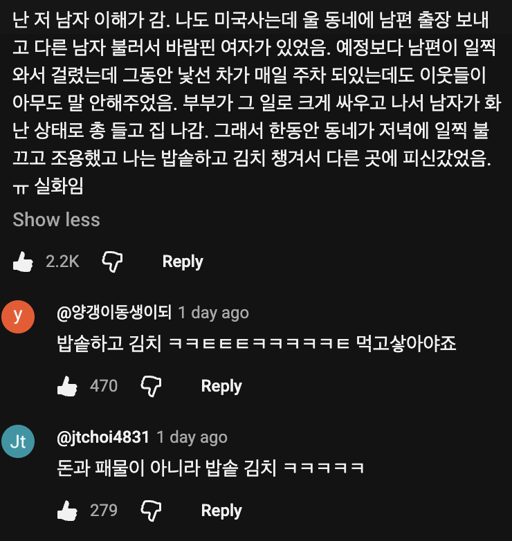

확실하진 않지만 정황상 그렇게 생각하는듯
근데 이게 참 어려운거야
알려주면 알려준 사람을 비난하는 이상한 경우가 있고 안알려주면 주변을 모두다 비난하는 경우도 있음
원래 나쁜 소식을 전달하는게 그래서 어렵지.
김치 중요하지..
바람핀 여자가 이혼하면 고소 당할 수 있어서 저런 건가.
근데 어지간해서는 불똥 튈까 모른척하는데 말 한 거 보면 아내가 어지간히 ㅈ같았거나 남편이랑 친한가 보네.
아내도 총을 쏠 수 있어요
밥김치 아니면 뭘 챙겨야함?
라면
밥샙
바람이라는거.. 진짜 사람 영혼을 죽이는거다... 믿음에 대한배신 뿐만아니라 그걸 당한사람은 앞으로의 인생에 이성을 믿는다는 행위자체가 불가능하다...
밥솥+김치는 킹정이지
아내가 바람피고 있다는거 알려주는건가 이웃으로써?